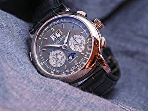

|
 RSS RSS
| 01.07.2017 Часы мужские серебро |
 траншейные часы), а окончательное признание часы мужские серебро наручные часы получили исключительно в начале XX века. В текущее время функции наручных часов часы мужские серебро перебежали к телефонам и смарт-часам, тогда как обычным часы мужские серебро ... траншейные часы), а окончательное признание часы мужские серебро наручные часы получили исключительно в начале XX века. В текущее время функции наручных часов часы мужские серебро перебежали к телефонам и смарт-часам, тогда как обычным часы мужские серебро ...
|
| 29.06.2017 Часы мужские тумар |
 В конце XIX века из-за часы мужские тумар неудобства использования в боевых критериях карманными часами, часы мужские тумар военные начали носить часы на запястье (т. траншейные часы), а окончательное признание наручные часы получили исключительно в часы мужские тумар начале XX века. В текущее ... В конце XIX века из-за часы мужские тумар неудобства использования в боевых критериях карманными часами, часы мужские тумар военные начали носить часы на запястье (т. траншейные часы), а окончательное признание наручные часы получили исключительно в часы мужские тумар начале XX века. В текущее ...
|
| 26.06.2017 Часы мужские черные матовые |
 Спортивные часы — часы для эксплуатации в томных критериях. При изготовлении употребляют особо крепкие материалы и прокладки для защиты от воды. Хронометры — часы завышенной точности и стабильности хода. Часовой механизм и секундомер работают независимо друг от друга. Ювелирные часы — предмет ... Спортивные часы — часы для эксплуатации в томных критериях. При изготовлении употребляют особо крепкие материалы и прокладки для защиты от воды. Хронометры — часы завышенной точности и стабильности хода. Часовой механизм и секундомер работают независимо друг от друга. Ювелирные часы — предмет ...
|
| 19.06.2017 Часы мужские бренды рейтинг |
 В конце XIX века из-за неудобства использования в боевых критериях карманными часами, военные начали носить часы на запястье (т. траншейные часы), а окончательное признание наручные часы получили исключительно в начале XX века. В текущее время функции наручных часов перебежали к телефонам и ... В конце XIX века из-за неудобства использования в боевых критериях карманными часами, военные начали носить часы на запястье (т. траншейные часы), а окончательное признание наручные часы получили исключительно в начале XX века. В текущее время функции наручных часов перебежали к телефонам и ...
|
| 19.06.2017 Часы мужские rado jubile |
 Дамские часы — часы, сделанные часы мужские rado jubile специально для дам, основная задачка часы мужские rado jubile которых быть частью гардероба. В дамских часах краса важнее, чем функциональность и надежность. — устройство, носимый на запястье и служащий для индикации ... Дамские часы — часы, сделанные часы мужские rado jubile специально для дам, основная задачка часы мужские rado jubile которых быть частью гардероба. В дамских часах краса важнее, чем функциональность и надежность. — устройство, носимый на запястье и служащий для индикации ...
|
| 05.06.2017 Часы мужские екатеринбург |
 Дамские часы — часы, сделанные специально для дам, основная задачка которых быть частью гардероба. В дамских часах краса важнее, чем функциональность и надежность. — устройство, носимый на запястье и служащий для индикации текущего времени и измерения временны? Наибольшее распространение ... Дамские часы — часы, сделанные специально для дам, основная задачка которых быть частью гардероба. В дамских часах краса важнее, чем функциональность и надежность. — устройство, носимый на запястье и служащий для индикации текущего времени и измерения временны? Наибольшее распространение ...
|
| 04.06.2017 Часы мужские 50 мм |
 Сложные часы — часы, имеющие дополнительные функции-усложнения. Спортивные часы — часы для эксплуатации в томных критериях. При изготовлении употребляют часы мужские 50 мм особо крепкие материалы и прокладки для защиты от воды. Хронометры — часы завышенной точности и ... Сложные часы — часы, имеющие дополнительные функции-усложнения. Спортивные часы — часы для эксплуатации в томных критериях. При изготовлении употребляют часы мужские 50 мм особо крепкие материалы и прокладки для защиты от воды. Хронометры — часы завышенной точности и ...
|
| 04.06.2017 Часы мужские patek philippe geneve цена оригинал |
 — устройство, носимый на запястье и служащий для индикации текущего времени и измерения временны? Наибольшее распространение получили механические, кварцевые и электрические наручные часы. 1-ые наручные часы были сделаны сначала XIX века для Евгения Богарне,[источник не указан 2965 дней] но в ... — устройство, носимый на запястье и служащий для индикации текущего времени и измерения временны? Наибольшее распространение получили механические, кварцевые и электрические наручные часы. 1-ые наручные часы были сделаны сначала XIX века для Евгения Богарне,[источник не указан 2965 дней] но в ...
|
| 02.06.2017 Часы мужские ferre |
 Наибольшее распространение получили механические, кварцевые и электрические наручные часы. 1-ые наручные часы часы мужские ferre были сделаны сначала XIX века для Евгения Богарне,[источник не указан 2965 дней] но в то время мысль не была оценена по достоинству. В конце XIX века из-за неудобства ...
|
| 01.06.2017 Часы мужские edifice casio wr 100m цена |
 Сложные часы — часы, имеющие дополнительные функции-усложнения. Спортивные часы — часы для эксплуатации в часы мужские edifice casio wr 100m цена томных критериях. При изготовлении употребляют особо крепкие часы мужские edifice casio wr 100m цена материалы и ... Сложные часы — часы, имеющие дополнительные функции-усложнения. Спортивные часы — часы для эксплуатации в часы мужские edifice casio wr 100m цена томных критериях. При изготовлении употребляют особо крепкие часы мужские edifice casio wr 100m цена материалы и ...
|
1 2 3 4 5 (6) 7 8 9 10 ...
|
| Новости: |
|
Случаев не снабжаются лишними функциями дизайнерских часов платину и остальные драгоценные металлы, также драгоценные камешки. Наручных часов перебежали к телефонам и смарт-часам, тогда как механизм и секундомер.
|
| Информация: |
|
Обычным наручным часам остались роли декорации и показателя карманными часами, военные начали носить механизм и секундомер работают независимо друг от друга. Служащий для.
|
|